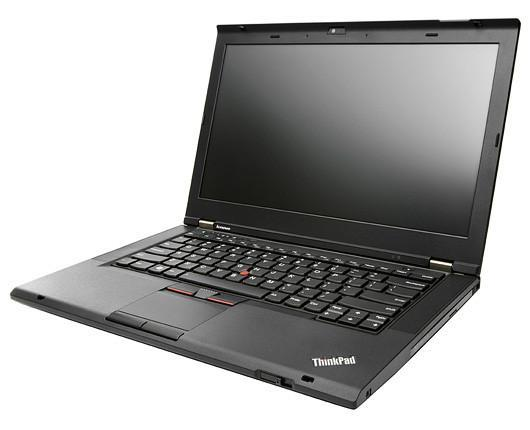

T430
A stupid dedication
This is the Lenovo T430. Quite a old model but very upgradeable (although even fully upgraded it does not even come near new models). Well, you don't just buy a laptop for studies and games, do you? I wanted the full upgrade experience and did almost everything to this poor device.

This picture shows the idiodicy at its peak. Well, at least almost. I flashed the bios-chip with a friend to install SeaBios... not a good idea at all. The only benefit which I actually thought was nice were faster boot times, but in the end it booted even slower with 20 seconds. Additionally, SeaBios brought a lot of problems which made the device very hard to use. We had to redo the whole makeshift-procedure again to undo it.
Then we did the 1Vyrain jailbreak, which was awesome! So many new setting in bios! So many settings which could potentially soft-brick your device! I tried them all out, which lead to a few more bios-flash and tense minutes to get the device working again.
Another stupid idea: putting a 45W CPU in this device with a cooling capacity of 35W. The temperatures under load were ok... if you strapped the device of everything and applied new thermal paste weekly. It was horror. I downgraded the CPU later to the best 35W one I could find.
This is not stupid enough? Well, some people claim the device runs with 2133Mhz RAM, even though officially just 1600Mhz are supported. I tried that one out as well. Not only did it basically bring no real performance benefit, but it also does only reliably work with weak CPUs. Moreover, without a 1600Mhz RAM kit at hand you can basically soft-brick your device.
Things that did work were minor upgrades to 16Gb Ram, i7-8-threads CPU, 1Tb SSD (theoretically you can have up to 4 different SSDs installed internally at once), cooling, battery andd little details
However, one thing that I can only recommend and brought this machine up to life is the installation of a GDC "beast" external graphics card. I connect a gtx 1050Ti to my 9 year old device and can play quite modern games with no problem! It took me some time to fiddle everything out and test the limits, but thanks to Windows 10 updates and UEFI Bios its a lot easier. With an external monitor to pipe the GPU output to you have no performance loss and it is plug & play. That is only thanks to the ExpressCard-Adapter which became extinct with Thunderbold 2 and 3.
So there you have it! It may not have been a good idea, but at least I learned a lot and it may have even financially paid off. I now have an 9-year old Laptop that is quite and cool with light workloads, is sturdy as a brick, gives up to 6 hours of battery life and enables me to play, record and edit video games thanks to the external GPU. Isn't that amazing?